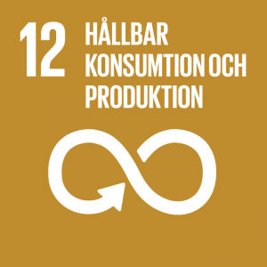
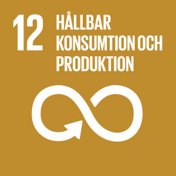

Energikrävande processer i våra datacenter startar varje gång någon t.ex. gör en Google sökning och strömmar musik eller film. 2017 beräknades nedladdningen av enbart låten ”Despacito” förbruka lika mycket elektricitet som 4 mindre länder i Afrika gör under ett helt år.
Fortsätter IT utvecklingen som den gör idag utan några hållbarhetsåtgärder beräknas datacenterindustrin stå för 20% av elförbrukning och uppemot 5,5% av koldioxidutsläpp mellan 5–10 år.
Större tryck på leverantörer av IT-tjänster och hur dem hanterar sina datacenter kan påverka dem till att potentiellt arbeta mer med förnybar energi eller energisnålare mjukvara som skulle kunna bidra till klimatsmarta lösningar.
Många innovativa IT lösningar kan bidra till en mindre klimatpåverkan som tex. utvecklingen av att kunna skicka e-post istället för fysiska brev.
Samtidigt ska man inte glömma bort att alla de "smarta" it-lösningar även gör avtryck i miljön. Även om e-post är betydligt smidigare och miljövänligare när man ställer ett e-post direkt
mot resan ett handskrivet brev gör, så är det betydligt lättare att bara skicka iväg ett e-post via internet än att skicka ett handskrivet brev,
vilket i sin tur gör att det skickas oändligt många fler e-meddelanden än vad som kanske behövts.
För drygt 10 år sedan beräknades en typiskt internetanvändare bidra med lika mycket koldioxid genom att skicka e-post under 1 år som att köra
en familjebil 200mil.
Året 2021 ökade internettrafiken med hela 23%. En stor bidragande faktor till detta samt den ökande energianvändningen hos datahallarna de senaste åren är framträdandet av AI-tjänster som tex, ChatGPT, som ensam har exploderat marknaden för AI. Redan innan tillträdandet av ChatGPT varnades det för utvecklingen av AI-modeller skulle vara ett stort växande problem ur en miljösynpunkt.
Grön IT är en viktig aspekt i IT-samhällets arbete mot en bättre hållbarhet. Det finns otroligt mycket viktigt en utvecklare ska tänka på vid utveckling av system för att bidra till mer ekologiska hållbara system. Vid webbutveckling finns det många olika aspekter att ta hänsyn till för att skapa en miljövänligare webbplats.
IT-branschens smutsiga baksida med de viktiga mineralerna som krävs för att utveckla dagens IT-system bidrar till inhumana livs- och arbetsförhållanden som strider mot FN:s globala mål. Det är upp till IT-företagen att se till att hela leverantörskedjan förhåller sig till dessa mål. Men det kan vara svårt att härleda till vart mineralerna som används i just ett specifikt företag har drivits ut. Genom att arbeta för att driva en fullt ut spårbar leverantörskedja kan företagen försäkra sig om att just dem mineralerna som används i deras produkter inte kommer från någon leverantör som utnyttjar barn och vuxna och tvingar dem att arbeta under farliga förhållanden vilket strider mot de målen som satts av FN. Vissa företag använder sig av en så kallad "blockkedja" för att kunna spåra mineralerna ursprung.
Nedan följer lite tips på verktyg som går att använda sig utav när man utvecklar för att öka tillgängligheten.